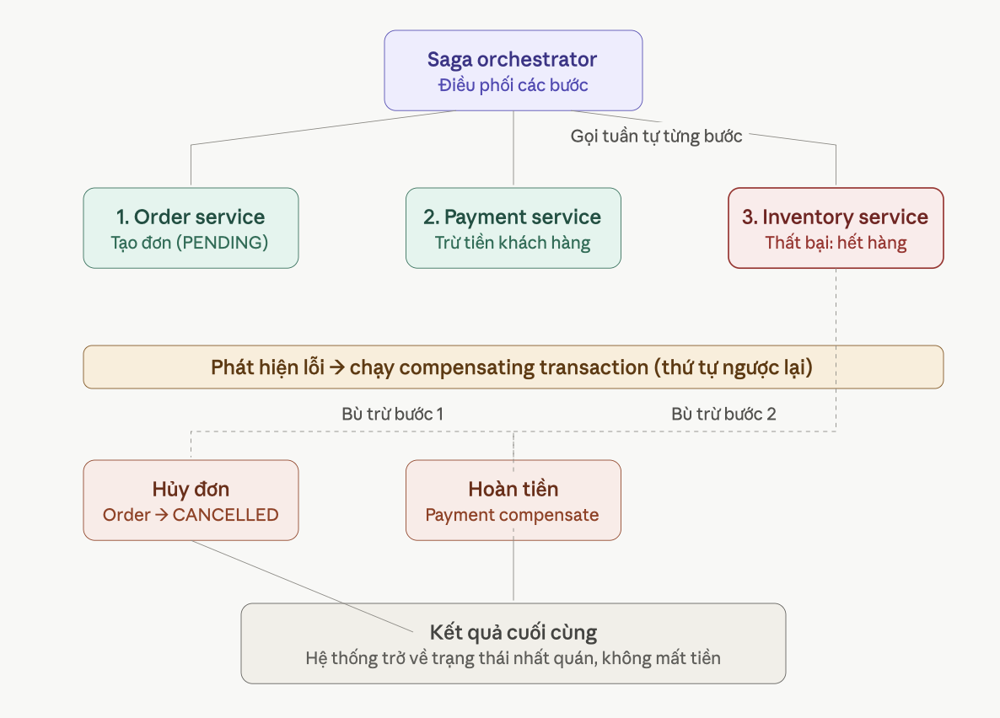

Trong kiến trúc microservices, một nghiệp vụ thường trải dài qua nhiều service khác nhau, mỗi service có database riêng. Ví dụ, khi đặt một đơn hàng:
Tuy nhiên, do mỗi service quản lý cơ sở dữ liệu riêng, hệ thống không thể sử dụng transaction truyền thống để đảm bảo tính toàn vẹn cho toàn bộ các bước. Nếu bước 3 (trừ tồn kho) thất bại do hết hàng, khoản tiền đã bị trừ ở bước 2 cần một cơ chế để hoàn trả.
Đây chính là bài toán mà Saga Pattern giải quyết: đảm bảo tính nhất quán dữ liệu xuyên suốt nhiều service, mà không cần distributed transaction (kiểu 2PC - vốn phức tạp, khóa tài nguyên lâu, không phù hợp cho hệ thống phân tán quy mô lớn).
Một saga là một chuỗi các local transaction (transaction cục bộ trong từng service). Mỗi bước:
Có 2 cách triển khai chính:
Hãy xem sơ đồ minh họa kiểu Orchestration - dễ hình dung hơn cho người mới:

Kịch bản: khách đặt một đơn hàng, nhưng bước kiểm tra kho lại phát hiện hết hàng.
PENDINGVì bước 3 thất bại, saga orchestrator phải "quay ngược lại" - chạy các compensating transaction theo thứ tự ngược với thứ tự đã thực hiện:
CANCELLED (bù trừ cho bước 1)Bước 3 (Inventory) không cần bù trừ vì nó chưa từng thành công - không có gì để hoàn tác.
Tương tự như E-commerce, trong monolith TalentHub, khi candidate nộp đơn, tất cả logic nằm trong một method với một
@Transactional:
@Transactional
public void submitApplication(SubmitRequest req) {
// 1. Validate job con mo
Job job = jobRepo.findById(req.jobId());
// 2. Kiem tra candidate khong trung
Candidate candidate = candidateRepo.findById(req.candidateId());
// 3. Tao application
Application app = new Application(candidate, job);
applicationRepo.save(app);
// 4. Gui email xac nhan
emailService.sendConfirmation(candidate.getEmail(), app);
// 5. Kich hoat parse CV
cvParserService.parse(candidate.getCvFile());
}
// Neu bat ky buoc nao fail, toan bo rollback.Với microservices, mỗi bước trên thuộc một service khác, có database riêng. Không thể dùng một
@Transactional bao trùm tất cả. Vậy làm sao đảm bảo tính nhất quán khi một bước trung gian thất bại?
Two-Phase Commit (2PC) yêu cầu một transaction coordinator khóa tài nguyên trên tất cả participant cho đến khi tất cả sẵn sàng commit. Trong microservices:
Richardson kết luận: "2PC is not an option for modern microservice applications" (Richardson, 2018, Ch. 4).
Khái niệm Saga được đề xuất lần đầu bởi Hector Garcia-Molina và Kenneth Salem trong bài báo "Sagas" (ACM SIGMOD, 1987). Ban đầu nó được thiết kế cho long-lived transaction trong database đơn lẻ, sau đó được Chris Richardson áp dụng vào microservices.
"A saga is a sequence of local transactions. Each local transaction updates the database and publishes a message or event to trigger the next local transaction in the saga. If a local transaction fails, the saga executes a series of compensating transactions that undo the changes made by the preceding local transactions."
- Nguồn: Chris Richardson, Microservices Patterns, Ch. 4
Các đặc tính quan trọng:
Compensating transaction (giao dịch bù) là một thao tác ngược lại với thao tác đã thực hiện, nhằm hoàn tác tác động của một bước trong saga khi bước sau đó thất bại.
| Bước gốc | Compensating Transaction | Ghi chú |
|---|---|---|
| Tạo Application (status = NEW) | Đánh dấu Application = FAILED hoặc xóa | Không xóa vật lý, đánh dấu để audit |
| Gửi email xác nhận | Gửi email sửa lỗi / thông báo hủy | Email đã gửi không thể thu hồi; gửi email bổ sung |
| Parse CV (tạo parsed data) | Xóa parsed data, đánh dấu "invalid" | Hoặc giữ lại cho manual review |
| Trừ credit ứng viên | Hoàn credit | Ví dụ mở rộng, không có trong TalentHub |
Richardson chia các bước saga thành ba loại:
Trong choreography, không có coordinator trung tâm. Mỗi service lắng nghe event từ service trước, thực hiện local transaction của mình, rồi publish event cho service tiếp theo. Tương tự như một vũ đạo (choreography): Mỗi thành phần tự nhận biết hành động tiếp theo dựa trên các sự kiện phát sinh từ các thành phần khác.
Trong orchestration, có một Saga Orchestrator (thường nằm trong service khởi tạo saga) điều phối toàn bộ luồng. Orchestrator gửi command tới từng service theo thứ tự, đợi response, rồi quyết định bước tiếp theo. Mô hình này tương tự như một nhạc trưởng (orchestrator) điều khiển một dàn nhạc.
Tình huống phù hợp nhất để áp dụng Saga trong TalentHub là nộp hồ sơ ứng tuyển với giới hạn số lượng ứng viên trên một Job Posting. Đây là tài nguyên giới hạn tự nhiên nhất có sẵn trong domain: mỗi Job có applicantCount và maxApplicants. Việc nộp hồ sơ tương đương với việc giữ chỗ (reserve) một suất ứng tuyển trên Job đó.
Nếu bước xử lý CV (Parse CV) thất bại do file lỗi, suất ứng tuyển này cần được trả lại (compensate). Cấu trúc này ánh xạ trực tiếp vào đúng 4 service hiện tại của bạn, không cần thêm service trung gian nào.
| Bước | Service | Local Transaction | Tài nguyên bị tiêu tốn / Trạng thái |
|---|---|---|---|
| T1 | application-service |
Tạo Application với status PENDING |
Không tiêu tốn gì, chỉ là điểm khởi phát. |
| T2 | job-service |
Kiểm tra Job đang OPEN và applicantCount < maxApplicants. Tăng applicantCount. |
Suất ứng tuyển trên job (Job Slot). Đây là tài nguyên giới hạn. |
| T3 | cv-parser-service |
Gọi candidate-service lấy CV, phân tích file, trích xuất kỹ năng. |
Không tiêu tốn, nhưng có thể thất bại (file lỗi định dạng, không đọc được). |
| T4 | notification-service |
Gửi thông báo kết quả ứng tuyển cho ứng viên. | Bước kết thúc, không publish tiếp. |
Nếu bước T3 (Parse CV) thất bại, hệ thống bắt buộc phải chạy compensating transaction để hoàn trả tài nguyên:
job-service (C1): Giảm lại applicantCount đã tăng ở bước 2.application-service (C2): Chuyển trạng thái Application sang CANCELLED hoặc NEEDS_MANUAL_REVIEW.Nếu không hoàn trả, Job đó sẽ bị tính sai số lượng ứng viên thực tế (ghost applications), có thể khiến Job bị tự động đóng sớm dù chưa đủ ứng viên hợp lệ.
Phần này hướng dẫn triển khai Choreography Saga cho bài toán nộp hồ sơ ứng tuyển với giới hạn slot trong TalentHub. Các service giao tiếp qua RabbitMQ (Topic Exchange), mỗi service tự lắng nghe event và tự quyết định hành động. Toàn bộ event record được đặt chung trong module common-event để tất cả service sử dụng thống nhất.
Saga bao gồm 4 service, giao tiếp qua một Topic Exchange duy nhất (talenthub.events). Mỗi service khai báo queue riêng và binding vào routing key cần lắng nghe.
| Service | Vai trò trong Saga | Event publish | Event consume |
|---|---|---|---|
application-service |
Khởi tạo Saga (T1), lắng nghe kết quả (C2) | application.created, job.created.increment |
cv.parsed.success, cv.parsed.failed, job.slot.rejected |
job-service |
Giữ slot (T2), Compensation (C1) | job.slot.reserved, job.slot.rejected |
job.created.increment, cv.parsed.failed |
cv-parser-service |
Phân tích CV (T3) | cv.parsed.success, cv.parsed.failed |
job.slot.reserved |
notification-service |
Gửi email thông báo | Không publish | job.slot.reserved, job.slot.rejected, cv.parsed.failed |
Toàn bộ event trong Saga được định nghĩa dưới dạng record (Java 16+) trong module shared/common-event. Các service khác chỉ cần thêm dependency vào module này để sử dụng chung, tránh việc mỗi service tự định nghĩa DTO riêng lẻ.
<dependency>
<groupId>com.talenthub</groupId>
<artifactId>common-events</artifactId>
<version>1.0-SNAPSHOT</version>
</dependency>Event được publish khi candidate nộp đơn. Chứa đầy đủ thông tin để các service phía sau xử lý mà không cần gọi ngược lại.
package com.talenthub.events;
import java.util.UUID;
public record ApplicationSubmittedEvent(
UUID applicationId,
UUID jobId,
UUID candidateId,
String cvFileUrl,
String candidateEmail,
String candidateFullName
) {
}Được publish bởi job-service khi slot còn trống. Mang theo thông tin để cv-parser và notification-service cùng sử dụng.
package com.talenthub.events;
import java.util.UUID;
public record JobSlotReservedEvent(
UUID applicationId,
UUID jobId,
UUID candidateId,
String candidateEmail,
String candidateFullName,
String cvFileUrl,
String jobTitle,
int currentCount,
int maxApplicants
) {
}Được publish bởi job-service khi job đã hết slot. Cả application-service và notification-service đều lắng nghe event này.
package com.talenthub.events;
import java.util.UUID;
public record JobSlotRejectedEvent(
UUID applicationId,
UUID jobId,
UUID candidateId,
String candidateEmail,
String candidateFullName,
String reason
) {
}Được publish khi phân tích CV thành công. Chỉ cần applicationId để application-service cập nhật trạng thái.
package com.talenthub.events;
import java.util.UUID;
public record CVParsedEvent(
UUID applicationId
) {
}Được publish khi phân tích CV thất bại. Đây là event kích hoạt chuỗi compensation: job-service giảm slot, application-service chuyển REJECTED, notification-service gửi email thông báo.
package com.talenthub.events;
import java.util.UUID;
public record CVParseFailedEvent(
UUID applicationId,
UUID jobId,
String candidateEmail,
String candidateFullName,
String reason
) {
}Java record tự động sinh constructor, accessor, equals(), hashCode(), toString(). Gọn, immutable, và Jackson có thể serialize/deserialize trực tiếp. Lưu ý: accessor của record là applicationId() thay vì getApplicationId() như class thông thường.
Khi candidate gọi API nộp đơn, application-service tạo Application và lưu đồng thời 2 OutboxEvent trong cùng một transaction. Outbox Pattern đảm bảo rằng dữ liệu trong DB và message gửi đi luôn nhất quán.
Bước này không gửi message trực tiếp vào RabbitMQ. Thay vào đó, một background job (MessageRelayListener) sẽ đọc bảng outbox_events và gửi message đi.
Đây là background job chạy mỗi 10 giây, đọc các outbox event chưa được gửi và publish chúng vào RabbitMQ.
package com.talenthub.application.infrastructure.outbox;
import com.fasterxml.jackson.databind.ObjectMapper;
import com.talenthub.application.domain.model.OutboxEvent;
import com.talenthub.application.domain.repository.OutboxEventRepository;
import com.talenthub.application.infrastructure.messaging.ApplicationEventPublisher;
import com.talenthub.application.infrastructure.messaging.RabbitMQConfig;
import com.talenthub.events.ApplicationCreatedEvent;
import com.talenthub.events.ApplicationSubmittedEvent;
import lombok.RequiredArgsConstructor;
import lombok.extern.slf4j.Slf4j;
import org.springframework.amqp.rabbit.core.RabbitTemplate;
import org.springframework.scheduling.annotation.Scheduled;
import org.springframework.stereotype.Component;
import java.util.List;
@Component
@RequiredArgsConstructor
@Slf4j
public class MessageRelayListener {
private final OutboxEventRepository outboxEventRepository;
private final RabbitTemplate rabbitTemplate;
private final ApplicationEventPublisher eventPublisher;
private final ObjectMapper objectMapper;
@Scheduled(fixedRate = 10000)
public void pollAndPublish() {
List<OutboxEvent> outboxEvents = outboxEventRepository.findUnPublished(false);
outboxEvents.forEach(outboxEvent -> {
try {
String routingKey = outboxEvent.getEventType();
switch (routingKey) {
case "application.created": {
eventPublisher.publishApplicationCreated(
objectMapper.readValue(outboxEvent.getPayload(),
ApplicationCreatedEvent.class));
outboxEvent.markProcessed();
outboxEventRepository.save(outboxEvent);
log.info("Published outbox event: type={}, aggregateId={}",
outboxEvent.getEventType(), outboxEvent.getAggregateId());
break;
}
case "job.created.increment": {
ApplicationSubmittedEvent event = objectMapper.readValue(
outboxEvent.getPayload(), ApplicationSubmittedEvent.class);
rabbitTemplate.convertAndSend(
RabbitMQConfig.EXCHANGE_NAME, "job.created.increment", event);
outboxEvent.markProcessed();
outboxEventRepository.save(outboxEvent);
log.info("Published outbox event: type={}, aggregateId={}",
outboxEvent.getEventType(), outboxEvent.getAggregateId());
break;
}
}
} catch (Exception ex) {
log.error("Exception in publish outbox event", ex);
}
});
}
}application.created: gửi cho notification-service (thông báo đơn đã được tiếp nhận).
job.created.increment: gửi cho job-service (yêu cầu tăng applicant count và reserve slot). Đây chính là điểm khởi đầu của luồng Saga.
Job-service lắng nghe event job.created.increment. Khi nhận được, nó kiểm tra số lượng ứng viên hiện tại so với giới hạn (maxApplicants). Nếu còn slot, tăng applicantCount và publish job.slot.reserved. Nếu hết slot, giảm lại và publish job.slot.rejected.
Ngoài ra, job-service còn lắng nghe cv.parsed.failed để thực hiện compensation (giảm lại applicant count đã tăng trước đó).
package com.talenthub.job.infrastructure.messaging;
import com.talenthub.events.ApplicationSubmittedEvent;
import com.talenthub.events.CVParseFailedEvent;
import com.talenthub.events.JobSlotRejectedEvent;
import com.talenthub.events.JobSlotReservedEvent;
import com.talenthub.job.domain.aggregate.JobAggregate;
import com.talenthub.job.domain.exception.JobNotFoundException;
import com.talenthub.job.domain.repository.JobRepository;
import lombok.RequiredArgsConstructor;
import lombok.extern.slf4j.Slf4j;
import org.springframework.amqp.rabbit.annotation.Exchange;
import org.springframework.amqp.rabbit.annotation.Queue;
import org.springframework.amqp.rabbit.annotation.QueueBinding;
import org.springframework.amqp.rabbit.annotation.RabbitListener;
import org.springframework.amqp.rabbit.core.RabbitTemplate;
import org.springframework.stereotype.Component;
import org.springframework.transaction.annotation.Transactional;
import java.util.Optional;
@Component
@Slf4j
@RequiredArgsConstructor
public class JobSagaListener {
private final JobRepository jobRepository;
private final RabbitTemplate rabbitTemplate;
// ===== BUOC T2: Reserve Slot =====
@RabbitListener(bindings = {@QueueBinding(
value = @Queue(name = "job.application-created", durable = "true"),
exchange = @Exchange(name = "talenthub.events", type = "topic"),
key = "job.created.increment")})
@Transactional
public void updateCountApplicant(ApplicationSubmittedEvent submittedEvent) {
log.info("Received job.created.increment: applicationId={}, jobId={}",
submittedEvent.applicationId(), submittedEvent.jobId());
Optional<JobAggregate> optional = jobRepository.findById(submittedEvent.jobId());
JobAggregate job = optional.orElseThrow(() -> {
throw new JobNotFoundException(submittedEvent.jobId());
});
job.incrementApplicantCount();
if (job.getApplicantCount() <= job.getMaxApplicants()) {
// CON SLOT: luu va publish job.slot.reserved
jobRepository.save(job);
JobSlotReservedEvent reservedEvent = new JobSlotReservedEvent(
submittedEvent.applicationId(),
submittedEvent.jobId(),
submittedEvent.candidateId(),
submittedEvent.candidateEmail(),
submittedEvent.candidateFullName(),
submittedEvent.cvFileUrl(),
job.getTitle(),
job.getApplicantCount(),
job.getMaxApplicants()
);
rabbitTemplate.convertAndSend(
RabbitMQConfig.EXCHANGE_NAME,
RabbitMQConfig.RK_JOB_SLOT_RESERVED,
reservedEvent);
log.info("Published job.slot.reserved: applicationId={}, count={}/{}",
submittedEvent.applicationId(),
job.getApplicantCount(), job.getMaxApplicants());
} else {
// HET SLOT: giam lai va publish job.slot.rejected
job.decrementApplicantCount();
jobRepository.save(job);
JobSlotRejectedEvent rejectedEvent = new JobSlotRejectedEvent(
submittedEvent.applicationId(),
submittedEvent.jobId(),
submittedEvent.candidateId(),
submittedEvent.candidateEmail(),
submittedEvent.candidateFullName(),
"Job da du so luong ung vien toi da ("
+ job.getMaxApplicants() + ")"
);
rabbitTemplate.convertAndSend(
RabbitMQConfig.EXCHANGE_NAME,
RabbitMQConfig.RK_JOB_SLOT_REJECTED,
rejectedEvent);
log.info("Published job.slot.rejected: applicationId={}, max={}",
submittedEvent.applicationId(), job.getMaxApplicants());
}
}
// ===== COMPENSATION C1: CV parse that bai, giam lai applicant count =====
@RabbitListener(bindings = @QueueBinding(
value = @Queue(name = "job.cv.parsed.failed.queue", durable = "true"),
exchange = @Exchange(name = "talenthub.events", type = "topic"),
key = "cv.parsed.failed"))
@Transactional
public void onCvParsedFailed(CVParseFailedEvent event) {
log.info("Received cv.parsed.failed (compensation): applicationId={}, jobId={}, reason={}",
event.applicationId(), event.jobId(), event.reason());
JobAggregate job = jobRepository.findById(event.jobId())
.orElseThrow(() -> new JobNotFoundException(event.jobId()));
job.decrementApplicantCount();
jobRepository.save(job);
log.info("Compensation completed: decremented applicant count for jobId={}, new count={}",
event.jobId(), job.getApplicantCount());
}
}Khi một listener cập nhật dữ liệu vào database (tăng/giảm applicantCount), cần đảm bảo rằng dữ liệu được commit thành công trước khi RabbitMQ acknowledge message. Nếu không có @Transactional, có thể xảy ra tình huống: message đã được acknowledge nhưng database chưa commit, dẫn đến mất dữ liệu.
CV-parser lắng nghe event job.slot.reserved. Khi nhận được, nó tải CV xuống và phân tích. Nếu thành công, publish cv.parsed.success. Nếu thất bại, publish cv.parsed.failed để kích hoạt chuỗi compensation.
package com.talenthub.cvparser.infrastructure.messaging;
import com.talenthub.events.CVParseFailedEvent;
import com.talenthub.events.CVParsedEvent;
import com.talenthub.events.JobSlotReservedEvent;
import com.talenthub.cvparser.service.MockCvParserService;
import lombok.RequiredArgsConstructor;
import lombok.extern.slf4j.Slf4j;
import org.springframework.amqp.rabbit.annotation.Exchange;
import org.springframework.amqp.rabbit.annotation.Queue;
import org.springframework.amqp.rabbit.annotation.QueueBinding;
import org.springframework.amqp.rabbit.annotation.RabbitListener;
import org.springframework.amqp.rabbit.core.RabbitTemplate;
import org.springframework.stereotype.Component;
@Component
@RequiredArgsConstructor
@Slf4j
public class CvParserListener {
private final MockCvParserService cvParsingService;
private final RabbitTemplate rabbitTemplate;
@RabbitListener(bindings = @QueueBinding(
value = @Queue(value = "cv.job.slot.reserved.queue", durable = "true"),
exchange = @Exchange(value = "talenthub.events", type = "topic"),
key = "job.slot.reserved"
))
public void onJobSlotReserved(JobSlotReservedEvent event) {
log.info("Received JobSlotReservedEvent for applicationId: {}, candidateId: {}",
event.applicationId(), event.candidateId());
try {
// T3: Parse CV
cvParsingService.processCvParsing(event.candidateId(), event.cvFileUrl());
// THANH CONG: publish cv.parsed.success
CVParsedEvent successEvent = new CVParsedEvent(event.applicationId());
rabbitTemplate.convertAndSend("talenthub.events", "cv.parsed.success", successEvent);
log.info("Successfully published CVParsedEvent for applicationId: {}",
event.applicationId());
} catch (Exception e) {
// THAT BAI: publish cv.parsed.failed de kich hoat Compensation
CVParseFailedEvent failedEvent = new CVParseFailedEvent(
event.applicationId(),
event.jobId(),
event.candidateEmail(),
event.candidateFullName(),
"Loi phan tich file: " + e.getMessage()
);
rabbitTemplate.convertAndSend("talenthub.events", "cv.parsed.failed", failedEvent);
log.error("Published CVParseFailedEvent for applicationId: {}. Reason: {}",
event.applicationId(), e.getMessage());
}
}
}Bước T3 (Parse CV) là điểm quyết định Saga thành công hay thất bại. Nếu processCvParsing() ném exception, event cv.parsed.failed sẽ lan truyền tới 3 service cùng lúc (job-service, application-service, notification-service) để thực hiện compensation song song.
Application-service lắng nghe 3 loại event kết quả:
cv.parsed.success: CV hợp lệ, chuyển application sang CV_SCREENING.cv.parsed.failed: CV lỗi, chuyển application sang REJECTED (Compensation C2).job.slot.rejected: Hết slot, chuyển application sang REJECTED.package com.talenthub.application.infrastructure.messaging;
import com.talenthub.application.domain.model.Application;
import com.talenthub.application.domain.model.PipelineStage;
import com.talenthub.application.domain.repository.ApplicationRepository;
import com.talenthub.events.CVParseFailedEvent;
import com.talenthub.events.CVParsedEvent;
import com.talenthub.events.JobSlotRejectedEvent;
import lombok.RequiredArgsConstructor;
import lombok.extern.slf4j.Slf4j;
import org.springframework.amqp.rabbit.annotation.Exchange;
import org.springframework.amqp.rabbit.annotation.Queue;
import org.springframework.amqp.rabbit.annotation.QueueBinding;
import org.springframework.amqp.rabbit.annotation.RabbitListener;
import org.springframework.stereotype.Component;
import org.springframework.transaction.annotation.Transactional;
@Component
@RequiredArgsConstructor
@Slf4j
public class ApplicationResultListener {
private final ApplicationRepository applicationRepository;
// ===== HAPPY PATH: CV parse thanh cong =====
@RabbitListener(bindings = @QueueBinding(
value = @Queue(value = "application.cv.parsed.success.queue", durable = "true"),
exchange = @Exchange(value = "talenthub.events", type = "topic"),
key = "cv.parsed.success"
))
@Transactional
public void onCvParsedSuccess(CVParsedEvent event) {
log.info("Received CVParsedEvent for applicationId: {}", event.applicationId());
Application app = applicationRepository.findById(event.applicationId())
.orElseThrow(() -> new RuntimeException("App not found"));
if (app.getCurrentStage() == PipelineStage.NEW) {
app.advanceStage(PipelineStage.CV_SCREENING);
applicationRepository.save(app);
log.info("Application {} advanced to CV_SCREENING.", app.getId());
}
}
// ===== COMPENSATION C2: CV parse that bai =====
@RabbitListener(bindings = @QueueBinding(
value = @Queue(value = "application.cv.parsed.failed.queue", durable = "true"),
exchange = @Exchange(value = "talenthub.events", type = "topic"),
key = "cv.parsed.failed"
))
@Transactional
public void onCvParsedFailed(CVParseFailedEvent event) {
log.info("Received CVParseFailedEvent for applicationId: {}, reason: {}",
event.applicationId(), event.reason());
Application app = applicationRepository.findById(event.applicationId())
.orElseThrow(() -> new RuntimeException(
"Application not found: " + event.applicationId()));
app.advanceStage(PipelineStage.REJECTED);
app.addNote("SYSTEM", "CV khong phu hop: " + event.reason());
applicationRepository.save(app);
log.info("Application {} updated to REJECTED due to CV parse failure.", app.getId());
}
// ===== JOB HET SLOT: Application bi tu choi =====
@RabbitListener(bindings = @QueueBinding(
value = @Queue(value = "application.job.slot.rejected.queue", durable = "true"),
exchange = @Exchange(value = "talenthub.events", type = "topic"),
key = "job.slot.rejected"
))
@Transactional
public void onJobSlotRejected(JobSlotRejectedEvent event) {
log.info("Received JobSlotRejectedEvent for applicationId: {}, reason: {}",
event.applicationId(), event.reason());
Application app = applicationRepository.findById(event.applicationId())
.orElseThrow(() -> new RuntimeException(
"Application not found: " + event.applicationId()));
app.advanceStage(PipelineStage.REJECTED);
app.addNote("SYSTEM", "Het slot: " + event.reason());
applicationRepository.save(app);
log.info("Application {} updated to REJECTED due to job slot full.", app.getId());
}
}Application-service không biết ai đã gửi event cv.parsed.failed. Nó chỉ biết rằng: "CV đã thất bại, tôi cần chuyển application sang REJECTED". Đồng thời, job-service cũng lắng nghe cùng event đó để giảm lại slot. Hai hành động compensation diễn ra song song, độc lập với nhau.
Notification-service lắng nghe 3 loại event để gửi email tương ứng. Đây là bước cuối cùng trong Saga, không publish thêm event nào (Retriable Transaction theo phân loại của Richardson).
package com.talenthub.notification.infrastructure.messaging;
import com.talenthub.events.JobSlotReservedEvent;
import com.talenthub.notification.infrastructure.email.EmailService;
import lombok.RequiredArgsConstructor;
import lombok.extern.slf4j.Slf4j;
import org.springframework.amqp.rabbit.annotation.Exchange;
import org.springframework.amqp.rabbit.annotation.Queue;
import org.springframework.amqp.rabbit.annotation.QueueBinding;
import org.springframework.amqp.rabbit.annotation.RabbitListener;
import org.springframework.stereotype.Component;
@Component
@RequiredArgsConstructor
@Slf4j
public class SlotReservedConsumer {
private final EmailService emailService;
@RabbitListener(bindings = @QueueBinding(
value = @Queue(name = "notification.slot-reserved", durable = "true"),
exchange = @Exchange(value = RabbitMQConfig.EXCHANGE_NAME, type = "topic"),
key = "job.slot.reserved"))
public void handleSlotReserved(JobSlotReservedEvent event) {
log.info("Received job.slot.reserved: applicationId={}, jobId={}, count={}/{}",
event.applicationId(), event.jobId(),
event.currentCount(), event.maxApplicants());
emailService.sendApplicationReceived(
event.candidateEmail(),
event.candidateFullName(),
event.jobTitle(),
event.currentCount(),
event.maxApplicants()
);
log.info("Sent application-received email to {} for applicationId={}",
event.candidateEmail(), event.applicationId());
}
}package com.talenthub.notification.infrastructure.messaging;
import com.talenthub.events.JobSlotRejectedEvent;
import com.talenthub.notification.infrastructure.email.EmailService;
import lombok.RequiredArgsConstructor;
import lombok.extern.slf4j.Slf4j;
import org.springframework.amqp.rabbit.annotation.Exchange;
import org.springframework.amqp.rabbit.annotation.Queue;
import org.springframework.amqp.rabbit.annotation.QueueBinding;
import org.springframework.amqp.rabbit.annotation.RabbitListener;
import org.springframework.stereotype.Component;
@Component
@RequiredArgsConstructor
@Slf4j
public class SlotRejectedConsumer {
private final EmailService emailService;
@RabbitListener(bindings = @QueueBinding(
value = @Queue(name = "notification.slot-rejected", durable = "true"),
exchange = @Exchange(value = RabbitMQConfig.EXCHANGE_NAME, type = "topic"),
key = "job.slot.rejected"))
public void handleSlotRejected(JobSlotRejectedEvent event) {
log.info("Received job.slot.rejected: applicationId={}, jobId={}, reason={}",
event.applicationId(), event.jobId(), event.reason());
emailService.sendSlotFullRejection(
event.candidateEmail(),
event.candidateFullName(),
event.reason()
);
log.info("Sent slot-rejected email to {} for applicationId={}",
event.candidateEmail(), event.applicationId());
}
}package com.talenthub.notification.infrastructure.messaging;
import com.talenthub.events.CVParseFailedEvent;
import com.talenthub.notification.infrastructure.email.EmailService;
import lombok.RequiredArgsConstructor;
import lombok.extern.slf4j.Slf4j;
import org.springframework.amqp.rabbit.annotation.Exchange;
import org.springframework.amqp.rabbit.annotation.Queue;
import org.springframework.amqp.rabbit.annotation.QueueBinding;
import org.springframework.amqp.rabbit.annotation.RabbitListener;
import org.springframework.stereotype.Component;
@Component
@RequiredArgsConstructor
@Slf4j
public class CvParseFailedConsumer {
private final EmailService emailService;
@RabbitListener(bindings = @QueueBinding(
value = @Queue(name = "notification.cv-parse-failed", durable = "true"),
exchange = @Exchange(value = RabbitMQConfig.EXCHANGE_NAME, type = "topic"),
key = "cv.parsed.failed"))
public void handleCvParseFailed(CVParseFailedEvent event) {
log.info("Received cv.parsed.failed: applicationId={}, jobId={}, reason={}",
event.applicationId(), event.jobId(), event.reason());
emailService.sendCvNotMatchNotification(
event.candidateEmail(),
event.candidateFullName(),
event.reason()
);
log.info("Sent CV-not-match email to {} for applicationId={}",
event.candidateEmail(), event.applicationId());
}
}Mỗi service cần khai báo một MessageConverter để Spring AMQP tự động serialize Java object thành JSON khi gửi, và deserialize JSON thành Java object khi nhận. Không có bean này, RabbitMQ sẽ gửi message dạng byte[] và gây lỗi deserialization.
@Configuration
public class RabbitMQConfig {
public static final String EXCHANGE_NAME = "talenthub.events";
@Bean
public MessageConverter jsonMessageConverter() {
ObjectMapper mapper = new ObjectMapper();
mapper.registerModule(new JavaTimeModule());
return new Jackson2JsonMessageConverter(mapper);
}
}
Happy Path: Application được lưu (T1). Job-service tăng slot và publish job.slot.reserved (T2). CV parse thành công và publish cv.parsed.success (T3). Application chuyển sang CV_SCREENING. Notification-service gửi email tiếp nhận.
Compensation (CV thất bại): CV parse thất bại, publish cv.parsed.failed. Ba service cùng lắng nghe: job-service giảm slot (C1), application-service chuyển REJECTED (C2), notification-service gửi email báo lỗi.
Hết slot: Job-service publish job.slot.rejected. Application-service chuyển REJECTED, notification-service gửi email từ chối.
Thay vì các service bắn event tự do, Orchestration sử dụng một class trung tâm (Saga Orchestrator) đặt tại application-service. Tại đây, chúng ta cũng áp dụng Outbox Pattern khi ghi log Command xuống DB nhằm tránh Dual-Write.
package com.talenthub.application.application;
import com.fasterxml.jackson.databind.ObjectMapper;
import com.talenthub.application.domain.model.Application;
import com.talenthub.application.domain.model.ApplicationStatus;
import com.talenthub.application.domain.model.OutboxEvent;
import com.talenthub.application.infrastructure.persistence.ApplicationRepository;
import com.talenthub.application.infrastructure.persistence.OutboxRepository;
import lombok.RequiredArgsConstructor;
import org.springframework.amqp.rabbit.annotation.RabbitListener;
import org.springframework.stereotype.Component;
import org.springframework.transaction.annotation.Transactional;
@Component
@RequiredArgsConstructor
public class ApplicationSagaOrchestrator {
private final ApplicationRepository applicationRepository;
private final OutboxRepository outboxRepository;
private final ObjectMapper objectMapper;
// --- BƯỚC 1: KHỞI TẠO SAGA (Ghi Outbox Command) ---
@Transactional
public void startSaga(Application app) {
app.setStatus(ApplicationStatus.RESERVING_JOB);
applicationRepository.save(app);
// Yêu cầu Job Service giữ slot thông qua Outbox
try {
ReserveJobSlotCommand command = new ReserveJobSlotCommand(app.getId(), app.getJobId());
String payload = objectMapper.writeValueAsString(command);
OutboxEvent outboxEvent = OutboxEvent.create("Application", app.getId(), "ReserveJobSlotCommand", payload);
outboxRepository.save(outboxEvent);
} catch (Exception e) {
throw new RuntimeException("Lỗi serialize command", e);
}
}
// --- BƯỚC 2: LẮNG NGHE KẾT QUẢ TỪ JOB SERVICE ---
@RabbitListener(queues = "reply.job.reserve.queue")
@Transactional
public void handleJobReply(JobReservationReply reply) {
Application app = applicationRepository.findById(reply.getApplicationId()).orElseThrow();
if (reply.isSuccess()) {
app.setStatus(ApplicationStatus.PARSING_CV);
applicationRepository.save(app);
// Gửi ParseCvCommand qua Outbox (Tương tự hàm trên - Viết tắt ở đây)
// ...
} else {
app.setStatus(ApplicationStatus.REJECTED);
app.setFailReason(reply.getReason());
applicationRepository.save(app);
}
}
// --- BƯỚC 3: LẮNG NGHE KẾT QUẢ TỪ CV PARSER (CÓ COMPENSATION) ---
@RabbitListener(queues = "reply.cv.parse.queue")
@Transactional
public void handleCvReply(CvParseReply reply) {
Application app = applicationRepository.findById(reply.getApplicationId()).orElseThrow();
if (reply.isSuccess()) {
// Hoàn thành Saga
app.setStatus(ApplicationStatus.CV_SCREENING);
applicationRepository.save(app);
} else {
// CV LỖI -> TRIGGER COMPENSATION LÙI LẠI
// Cập nhật Application thành CANCELLED
app.setStatus(ApplicationStatus.CANCELLED);
app.setFailReason(reply.getReason());
applicationRepository.save(app);
// Gửi Command hoàn trả slot lại cho Job Service (qua Outbox)
try {
ReleaseJobSlotCommand command = new ReleaseJobSlotCommand(app.getId(), app.getJobId());
String payload = objectMapper.writeValueAsString(command);
OutboxEvent outboxEvent = OutboxEvent.create("Application", app.getId(), "ReleaseJobSlotCommand", payload);
outboxRepository.save(outboxEvent);
} catch (Exception e) {
// Xử lý lỗi serialize
}
}
}
}Với Orchestration, job-service và cv-parser-service không cần biết quy trình tổng thể. Chúng chỉ đơn giản là nhận Command -> Thực hiện -> Trả Reply.
package com.talenthub.job.infrastructure.messaging;
import com.talenthub.job.application.JobService;
import lombok.RequiredArgsConstructor;
import org.springframework.amqp.rabbit.annotation.RabbitListener;
import org.springframework.amqp.rabbit.core.RabbitTemplate;
import org.springframework.stereotype.Component;
@Component
@RequiredArgsConstructor
public class JobCommandHandler {
private final JobService jobService;
private final RabbitTemplate rabbitTemplate;
@RabbitListener(queues = "command.job.reserve.queue")
public void handleReserveCommand(ReserveJobSlotCommand command) {
try {
boolean success = jobService.reserveSlot(command.getJobId());
JobReservationReply reply = new JobReservationReply(command.getApplicationId(), success, success ? null : "JOB_FULL");
rabbitTemplate.convertAndSend("talenthub.direct", "reply.job.reserve", reply);
} catch (Exception e) {
JobReservationReply reply = new JobReservationReply(command.getApplicationId(), false, e.getMessage());
rabbitTemplate.convertAndSend("talenthub.direct", "reply.job.reserve", reply);
}
}
@RabbitListener(queues = "command.job.release.queue")
public void handleReleaseCommand(ReleaseJobSlotCommand command) {
// Thực thi Compensation: Trả lại slot
jobService.releaseSlot(command.getJobId());
// Không cần reply cho compensation trừ khi hệ thống yêu cầu quản lý retry khắt khe
}
}Dựa trên việc cài đặt 2 mô hình trên cho cùng một kịch bản, dưới đây là phân tích lợi ích và bất lợi dưới góc độ thiết kế hệ thống.
| Tiêu chí | Choreography (Biên đạo múa) | Orchestration (Nhạc trưởng) |
|---|---|---|
| Độ phức tạp (Coupling) | Thấp (Loose Coupling). Các service không biết về nhau, chỉ lắng nghe event. job-service không cần quan tâm ai bắn ra ApplicationCreated. |
Cao hơn. Orchestrator cần biết tất cả các Commands và sự tồn tại của các participant trong quy trình. |
| Khả năng theo dõi (Observability) | Rất khó. Không có nơi nào chứa toàn bộ quy trình. Bạn phải mở code của 4 service ra đọc để hiểu luồng chạy từ đầu đến cuối như thế nào. | Cực kỳ dễ. Chỉ cần mở class ApplicationSagaOrchestrator là có thể nhìn thấy toàn bộ business flow, state machine, và compensation logic. |
| Phát triển tính năng mới | Dễ dàng thêm side-effect. Ví dụ muốn thêm bước tính điểm sau khi parse CV, chỉ việc tạo service mới lắng nghe CVParsedEvent mà không cần sửa code cũ. |
Phải sửa Orchestrator. Nếu thêm bước, bạn bắt buộc phải sửa class Orchestrator để thêm Command/Reply mới vào state machine. |
| Xử lý Compensation (Rollback) | Dễ dính Cyclic Dependency. Các service bắn event chéo nhau rất dễ gây lỗi vòng lặp. Việc undo ở bước 4 sẽ lan truyền rất rắc rối. | Mạch lạc. Orchestrator giữ quyền chủ động. Nếu bước 4 lỗi, Orchestrator sẽ ra lệnh undo ngược lại từ 3 -> 2 -> 1 một cách tuyến tính. |
- Choreography cực kỳ tuyệt vời cho các quy trình ngắn (2-3 bước) và không có quá nhiều kịch bản rẽ nhánh hoặc compensation phức tạp. Khởi đầu bằng Choreography giúp hệ thống decoupled.
- Tuy nhiên, khi số lượng service trong luồng > 3, hoặc business flow có nhiều nhánh rẽ, compensation ngược xuôi (như kịch bản TalentHub trên), HÃY CHỌN ORCHESTRATION. Việc maintain một Choreography Saga phức tạp sẽ trở thành thảm họa debug (gọi là "event spaghetti"). Orchestration tuy tập trung logic (centralized) nhưng mang lại khả năng quản trị state rõ ràng, thứ cực kỳ thiết yếu cho các Domain Core.
| Khái niệm | Nội dung chính |
|---|---|
| Saga Pattern | Chuỗi local transaction, mỗi bước có compensating transaction tương ứng. |
| Choreography | Không có coordinator; service giao tiếp bằng chuỗi phản ứng dây chuyền qua Event. Dễ mở rộng nhưng khó debug. |
| Orchestration | Có Saga Orchestrator trung tâm điều phối qua Command/Reply. Logic tập trung, dễ debug, quản lý state tốt nhưng Coupling cao hơn. |
| Compensating Transaction | Thao tác ngược (Ví dụ: Giảm lại Slot) để hoàn tác tác động của bước đã commit khi luồng thất bại. |
| Outbox Pattern | Giải quyết vấn đề Dual-Write bằng cách lưu Message vào cùng Database Transaction với Domain Entity, sau đó gửi đi bằng một Background Job. |